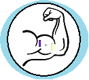
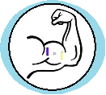

|  |
Muscle Power Gaming
EMG-enabled Gaming Environment
|
|  |
Muscle Power Gaming
EMG-enabled Gaming Environment
|
This repository demomstrates the use of a Raspberry Pi with EMG detection cicuitory to control a video game in real-time using signals from the muscles. This is a project for the Real-time Embedded Systems cource at the University of Glasgow.
The repository describes how to measure EMG signals from the user's muscles - we have given the example of biceps and/or triceps however this technology is apllicable to any muscles capable of contraction. The use of these signals to control the movement of a paddle in the classic game Pong is then demostrated and presented(the principles being completely transferrable to other relatively rudimentary games). 🏓
The simplest video games have very limited inputs. For some, this is simply left/right, while for others it may be up/down/left/right. This makes it relatively straightforward to hack these inputs to be controlled by EMG signals (one muscle controls left, another right, etc). With a 4 channel system, we hope to be able to accomodate single-player versions of games requiring 4 input options, or multiplayer versions of games requiring only 2 (providing a safe outlet for any pent up testosterone!).
The primary use of this system is to increase the level of submersion the player feels within the gaming environment, providing a new challenge, and adding a new dimension to the gaming experience. The system also has potential application in the field of rehabilitation, encouraging persistence with otherwise unpleasant rehabilitation regimes.
Below are the links to our Facebook and Twitter pages where you can keep up to date with all our latest and most exciting developments. You can also find our code documentation, aided with the Wiki page, so that you can get to grips with our work yourselves!
Muscle Power Gaming - Facebook
And all of this done synchronously and in real-time! For an example video of each process, see the README in each folder
Here we provide a description of the methods that should be employed in measuring user EMG. In light of the recent COVID-19 outbreak, the hardware components of this project remain incomplete and as such sample EMG data was instead obtained using a USB-DUX and bioamplifier for software testing purposes. The acquired EMG data has been deposited in Gitlab, and can be found through the link below, along with an example Python script for filtering and plotting.
Standard Ag/AgCl electrodes should be place approximately 20cm apart on the chosen muscle(s). In our case, measuring 4 channels, this required a pair of electrodes on each bicep and a pair on each tricep, with a further electrode attached to the ankle to act as ground (9 total). For a 2 channel approach, any 2 pairs of electrodes may be discounted, leaving 5 total.
 1.8.18
1.8.18